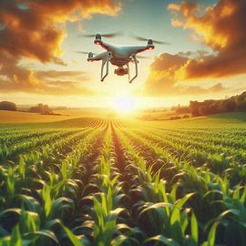

Pessoas na faixa etária dos 18 aos 25 anos, (ou mais) estão encontrando no campo,
espaço para aplicar seus conhecimentos.
Modernização no Setor Agropecuário
A modernização do agro transformou o campo com o uso de tecnologias como máquinas inteligentes,
drones, softwares de gestão e internet das coisas. Isso aumentou a produtividade e reduziu o trabalho braçal.
Com essas inovações, o agro se tornou mais conectado, sustentável e profissionalizado — o que tem atraído cada vez
mais jovens. Hoje, muitos veem no campo oportunidades de carreira em áreas como tecnologia, gestão,
sustentabilidade e empreendedorismo, rompendo com a imagem antiga de um setor apenas rural e tradicional.
Se interessou?
Algumas especializações mais rentáveis do Agro.

Agronomia
Agronomia cuida da produção agrícola e gestão do campo, focando em solos e cultivos para garantir a segurança alimentar.
Medicina Veterinária
Medicina Veterinária protege a saúde dos animais, tratando doenças e assegurando a qualidade dos produtos animais, com um papel vital na saúde pública
Zootecnia
Zootecnia se dedica à criação e manejo de animais, visando eficiência e bem-estar para a produção de alimentos de origem animal.
Agricultura de Precisão
Tecnologia em Mecanização em Agricultura de Precisão aplica tecnologias avançadas para otimizar o uso de recursos e aumentar a produtividade nas lavouras.